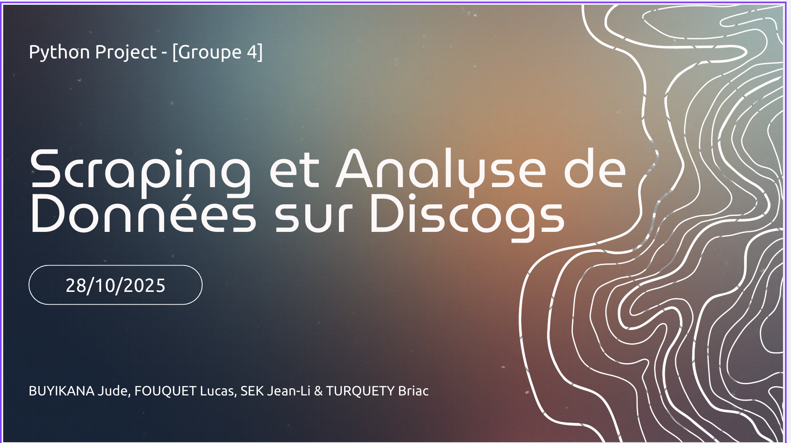
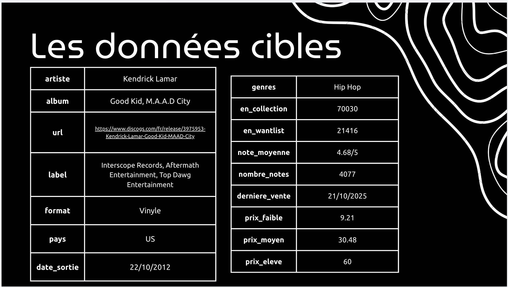
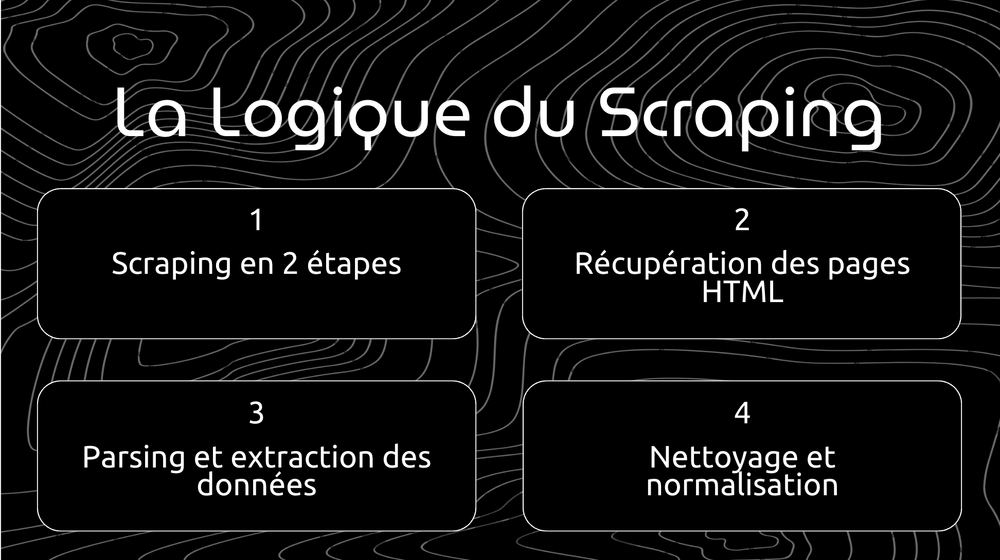
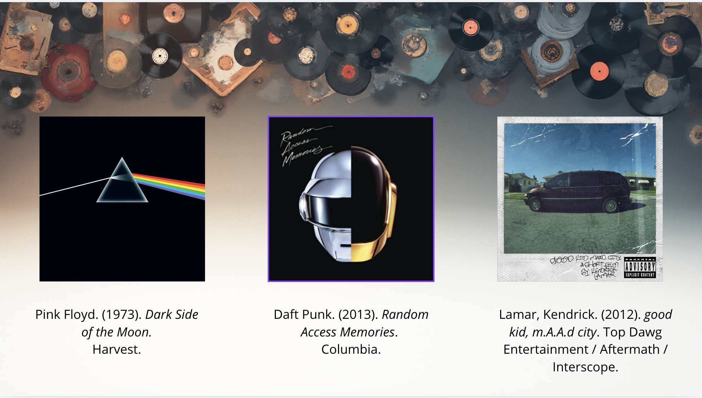
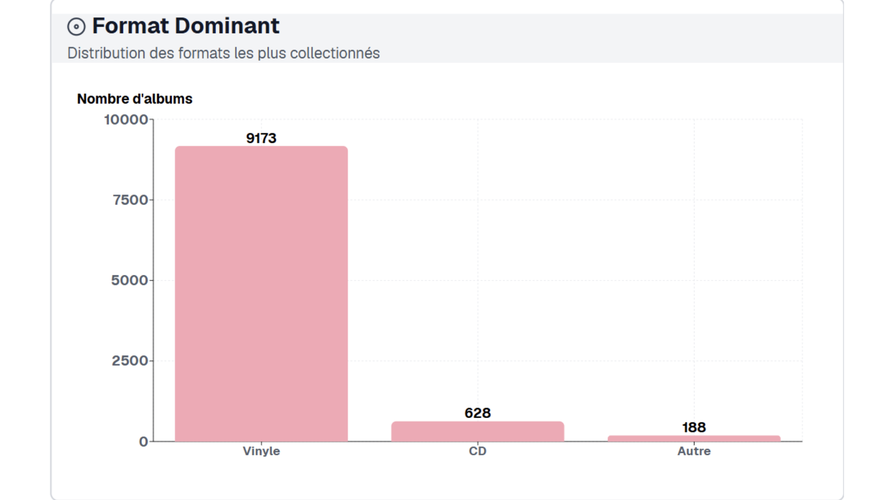
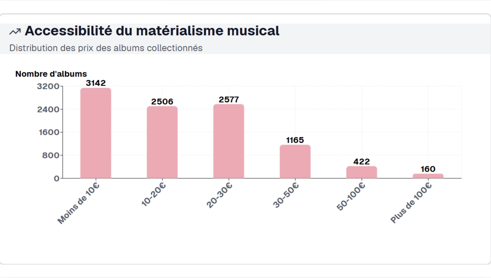

Discogs est la plus grande base de données musicale communautaire au monde — un Wikipedia du disque où des millions de collectionneurs cataloguent, achètent et vendent leurs vinyles, CDs et cassettes avec des cotes de marché en temps réel. Ce projet extrait et enrichit ces données à grande échelle via un pipeline Python asynchrone.
Ce projet est né d'une conversation entre quatre passionnés de musique. L'un d'entre nous est un vrai collectionneur de vinyles — le genre de personne qui connaît la différence entre un pressage original et une réédition, et qui passe ses week-ends à fouiller les bacs des disquaires. Cette obsession du matérialisme musical — la valeur d'un album, sa rareté, son histoire — nous a naturellement amenés vers Discogs, la plus grande base de données musicale communautaire au monde. On s'est demandé : et si on pouvait extraire tout ça ? Quels genres se revendent le mieux ? Quels labels dominent les collections ? C'est comme ça que le projet a démarré — quatre amis, un dataset, et beaucoup de curiosité.
Construire un pipeline complet d'extraction : de la collecte brute à l'enrichissement des données, jusqu'à l'export structuré prêt à analyser — prix de marché inclus.
Discogs.com — 200+ pages de catalogue, des milliers d'albums avec artistes, labels, formats (vinyle, CD, cassette), genres et données de marché en temps réel.
Scraping asynchrone avec rendu JavaScript, retry automatique, rate limiting respectueux des serveurs et backups intermédiaires tous les 50 albums.
Les vinyles jazz et soul des années 60-70 concentrent les cotes les plus élevées. Les collections les plus fournies sur Discogs dépassent souvent 5 000 références par utilisateur.
Parcours des 200 pages du catalogue Discogs. Extraction des noms d'artistes, titres d'albums et URLs pour chaque entrée — jusqu'à ~10 000 albums.
Visite de chaque page album pour récupérer labels, formats, dates de sortie, genres, nombre de collections, notes et prix du marché.
Retry automatique (3 tentatives), délais aléatoires entre requêtes (2-5s), version "safe" avec timeouts étendus pour les IPs signalées.
Normalisation automatique : suppression des parenthèses, décodage HTML, standardisation des formats. Export en CSV avec backups tous les 50 albums.
async def scrape_catalog_page(crawler, page_num):
url = f"https://www.discogs.com/search/?page={page_num}"
result = await crawler.arun(url=url)
soup = BeautifulSoup(result.html, "html.parser")
albums = []
for item in soup.select(".card_release"):
title = item.select_one(".card_title").get_text(strip=True)
artist = item.select_one(".card_artist").get_text(strip=True)
link = item.select_one("a")["href"]
albums.append({"title": title, "artist": artist, "url": link})
return albums
async def fetch_with_retry(crawler, url, max_retries=3):
for attempt in range(max_retries):
try:
result = await crawler.arun(url=url)
if result.success:
return result
except Exception as e:
wait = random.uniform(2, 5)
print(f"Tentative {attempt+1} échouée. Retry dans {wait:.1f}s")
await asyncio.sleep(wait)
return None






Le projet complet est disponible sur GitHub.